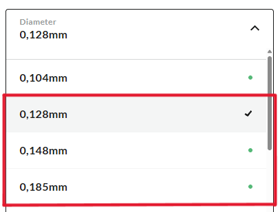
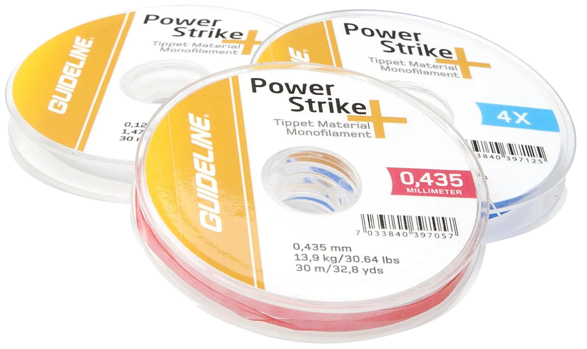

Fortom
Nettbutikkene åpnes i en ny fane. Ønskelisten blir liggende åpen.
Reserver størrelsen du vil gi før du handler, og behold reservasjonen etter kjøpet. Spør meg hvis du trenger hjelp med reservasjonen.
Sjekk oppdatert pris og frakt i nettbutikken før du betaler.
Fortom til fluefiske
En fortom gjør overgangen fra det tykke fluesnøret til flua jevnere og mindre synlig i vannet.
Størrelser
Én spole i hver størrelse: 0,128 mm, 0,148 mm og 0,185 mm. Hver størrelse reserveres separat nedenfor.

Butikk

Se hos Skittfiske ↗ (åpnes i ny fane)Hva er en fortom?
Fortommen er den tynne delen som festes mellom fluesnøret og flua. Den gjør det mulig å presentere flua mer forsiktig og naturlig enn om flua ble festet direkte i det tykke fluesnøret.
Jeg ønsker meg en fortom fordi den er en viktig del av flueutstyret og må byttes når den blir slitt, skadet eller for kort. Det er praktisk å ha en ekstra tilgjengelig før fisketuren.